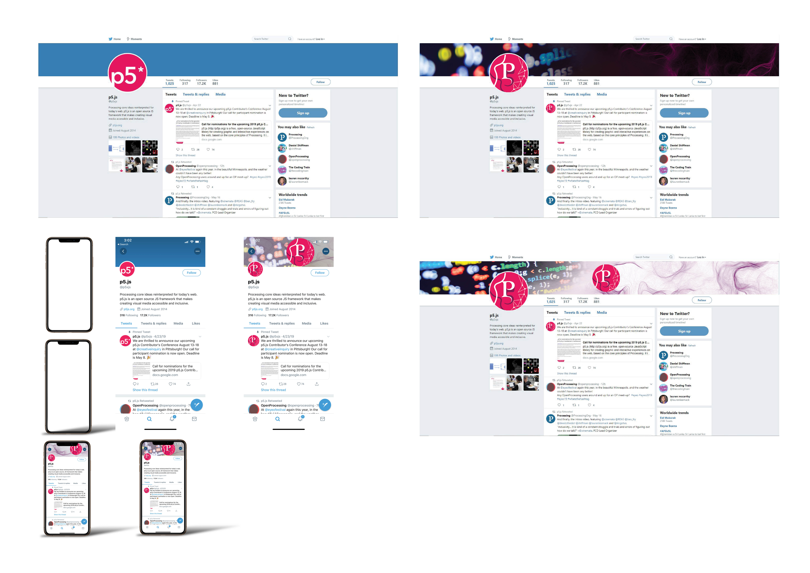
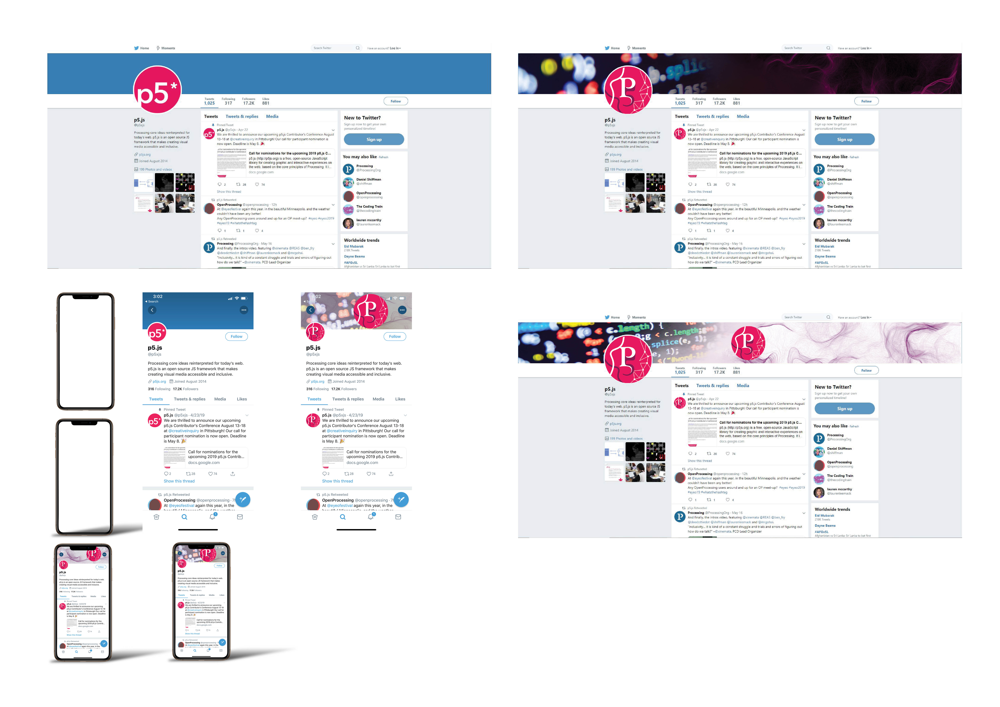

.png)
P5.js is a Java Script library like Processing from Java. This library has simplified to allow all the age groups be able to start developing their own ideas in web design, computer art, Architecture and even animation.
P5.js has provided many ways of programming and code editing for whom is interested in Object oriented programming. Web Editor, Android and ISO editor and free to download for any type of PC or laptop
P5.js is a good example of open world creativity tool. using this Java Script library users are free to make geometric or non-geometric shapes. Also using simple mathematics to develop animate shapes.

The white is the brightest color that has used with the logo. the reason of this bright color is to highlight the main features of the design for example the “P“ that is the legacy of this company.
This shade of pink color is the original pink that has used for the P5.js logo. This shade is used within two other shades to maintain the original feature of the logo.
This darker pulper has used to give some elements more depth. This depth could help the viewer eye to focus on the main features of the logo.

As the frame for the font design Minion Pro is used. Firstly to merge the two letters to gather and second to show the creativity aspect of this product the font is edited in curve shape.
To have a better understanding of how the newly designed logo will look on existing platforms the company is using the logo as well as covers and banners are added to pages.
.jpg) 

.jpg)
YouTube
.jpg)
.jpg)